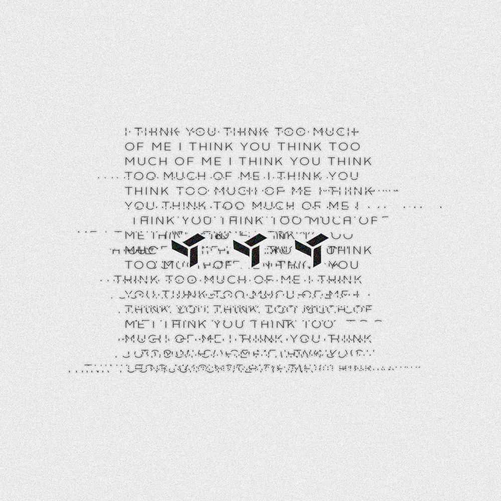
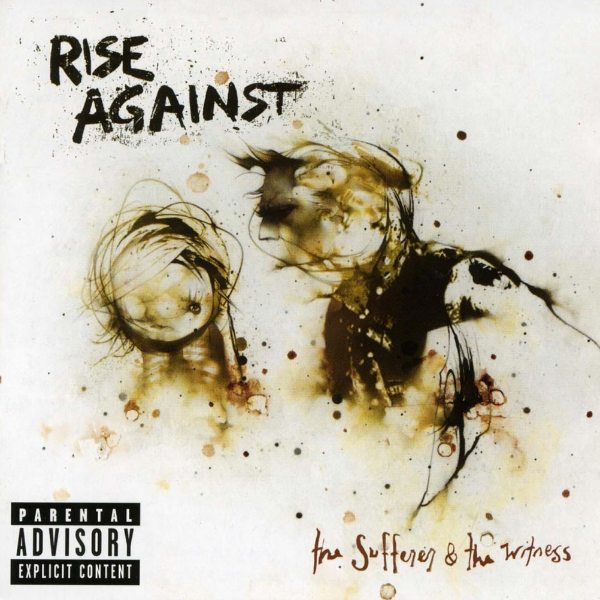

Wasting Light is the seventh studio album by American rock band Foo Fighters. It was released in 2011 on RCA Records, and is the first album to feature rhythm guitarist Pat Smear since The Colour and the Shape (1997), making the band a five piece with the album. Wishing to capture the essence of the group's earlier work and avoid the artificiality of digital recording, frontman Dave Grohl arranged for the band to record in his garage in Encino, California using only analog equipment.
The Getaway
Red Hot Chili Peppers
Funk Rock - 2015
BUY THIS ALBUMThe Getaway is the eleventh studio album by American rock band Red Hot Chili Peppers, released through Warner Bros. in 2016. This is the band's first studio album since 2011's I'm with You. It was produced by Danger Mouse, who replaced Rick Rubin after twenty-five years and six albums as the band's producer, making it the first non-Rubin produced album since 1989's Mother's Milk, while its release makes the current lineup of the band only the second in the group's history to record more than one album together.

I Think You Think Too Much Of Me
Eden
Alternative - 2016
BUY THIS ALBUMI Think You Think Too Much of Me is the second EP by Irish musician EDEN, released in 2016 through his own label MCMXCV and distributed by Astralwerks. The EP was recorded and produced in Dublin and contains seven tracks spanning approximately 26 minutes. I Think You Think Too Much Of Me is the first of Ng's works to be released on physical media, as it was produced in two 12-inch vinyl formats, clear red and clear, in addition to Compact Cassette.

The Sufferer And The Witness
Rise Against
Hardcore Punk - 2006
BUY THIS ALBUMThe Sufferer And the Witness is the fourth album by the American punk rock band Rise Against. The album was released in 2006. It was their second release on major label Geffen Records, following 2004's Siren Song of the Counter Culture. It is their final studio album on Geffen, and the last to feature guitarist Chris Chasse. It sold 48,000 copies in its first week, debuting at #10 on the Billboard 200. The album has been certified gold by the RIAA and platinum by the CRIA.